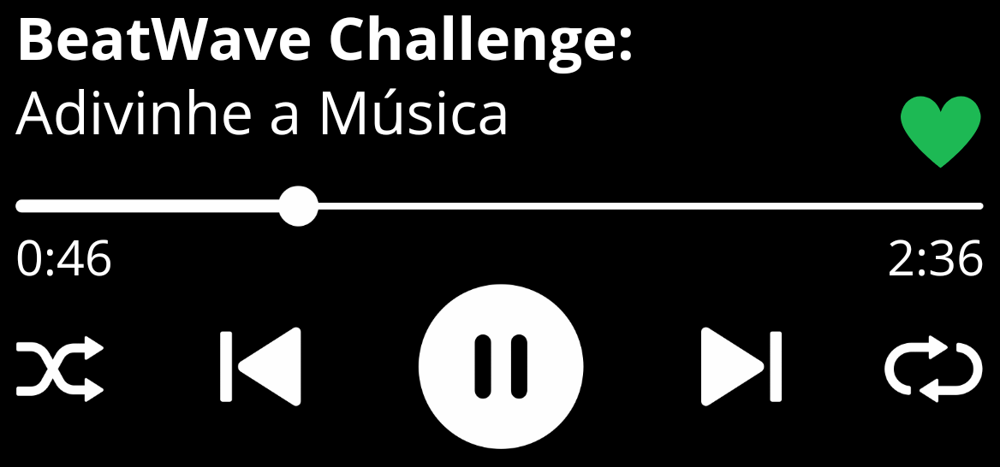

Como jogar?
- Acerte a música e ganhe pontos!
- Fique no ranking dos melhores jogadores!
- Adivinhe a música! Mas cuidado, você tem apenas 10 segundos!
- Ganha quem acertar 8 músicas primeiro.
Dicas:
- Use apelidos curtos.
- Certifique-se de apertar o botão "Enviar" para enviar sua resposta.
- Escute os 10 segundos inteiros e após isso, digite sua resposta.
Aviso:
- Caso queira usar o botão "Enter" para enviar sua resposta, use a tecla "Tab" juntamente ao "Enter".
- Ao errar a resposta, você perde 5 pontos.
- Ao acertar a resposta, você ganha 10 pontos.
- Ao clicar "Play" após os 10 segundos, você perde 2 pontos.